Como usar o AgroDock — Contratos e Gestão: cadastros, tabela de ICMS, contratos de corretagem, compra e venda, DF-e (notas fiscais eletrônicas), contas a pagar e a receber, caixa, relatórios, cotações e notícias do café, assinatura e administração do site.
Versão de setembro de 2026 · As telas mostradas usam dados de demonstração.
Sumário
1 Conhecendo o AgroDockO que o sistema faz, onde abrir, menu e empresa
2 Criar conta e entrarTeste grátis, login e senha
3 Primeiros passosA ordem certa para deixar tudo pronto
4 PainelSaldo, a receber, a pagar e atalhos
5 CadastrosClientes e fornecedores, formas de pagamento, produtos, unidades, bancos, empresas, usuários, tabela de ICMS e mais
6 Contratos de caféCorretagem, compra e venda; lançar em 5 etapas, agente, ICMS, gerar títulos, imprimir
7 DF-e — notas fiscais eletrônicasBaixar da SEFAZ com certificado A1, DANFE, manifestação do destinatário e importação
8 Contas a receber e a pagarNovo título, rateio, parcelas, baixa, estorno
9 Caixa e bancosExtrato, entradas, saídas e transferências
10 RelatóriosDRE, balancete, contratos, fluxo de caixa
11 Cotações e Mercado do CaféFaixa de cotações no rodapé, histórico das bolsas, preços por cidade e notícias
12 Minha assinaturaPlanos, pagamento por Pix, usuários
13 Usando no celularMenu, listas em cartões e contrato por etapas
14 Administração do siteSó para o dono do sistema: empresas, acessos, Pix e configurações
15 Dúvidas frequentesProblemas comuns e como resolver
1. Conhecendo o AgroDock
O AgroDock é um sistema para assessorias e corretoras que aproximam comprador e vendedor e cobram comissão. Nele você lança o contrato, o sistema calcula a corretagem dos dois lados, transforma a comissão em contas a receber e acompanha tudo até o dinheiro entrar — com contas a pagar, caixa, DRE e balancete funcionando por trás.
O sistema abre no navegador (Chrome, Edge, Safari) do computador ou do celular. Não é preciso instalar nada: basta acessar o endereço do site e entrar com seu e-mail e senha.
A tela do sistema
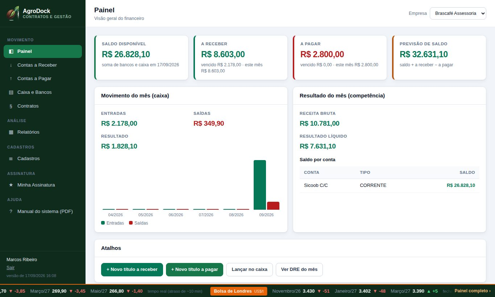
Tela principal: menu à esquerda, título da página no topo e seletor de empresa à direita.
Parte da tela
Para que serve
Menu à esquerda
Movimento (Painel, Contas a Receber, Contas a Pagar, Caixa e Bancos, Contratos), Análise (Relatórios), Cadastros e Assinatura.
Empresa (canto superior direito)
Se a sua conta tem mais de uma empresa, escolha aqui em qual você está trabalhando. Cadastros, lançamentos e relatórios são sempre da empresa escolhida.
Seu nome e Sair (rodapé do menu)
Mostra quem está conectado. Sair encerra a sessão.
“versão de …”
Data da versão do sistema carregada. Serve para conferir se uma atualização já chegou.
Faixa de cotações (rodapé)
Passa as cotações do café (NY, Londres, B3) e das moedas. Clique nela para abrir o painel Mercado do Café (capítulo 11).
Filtrar e Exportar CSV
Quase todas as listas têm busca e o botão Exportar CSV, que baixa a lista para abrir no Excel.
2. Criar conta e entrar
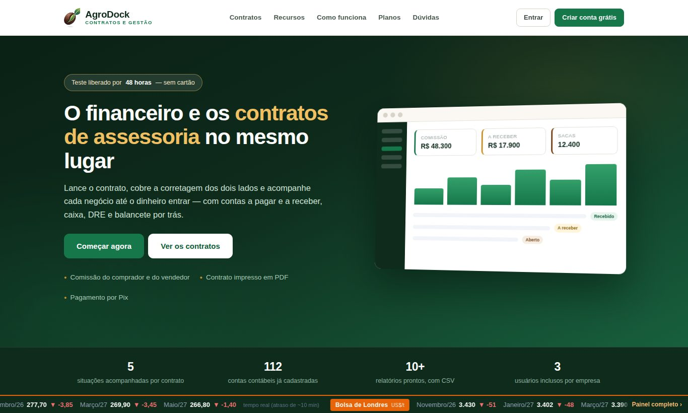
Página inicial do site, com os botões Entrar e Criar conta grátis.
Criar a conta (teste grátis)
Na página inicial, clique em Criar conta grátis (ou em um dos planos).
Preencha nome, e-mail (será o seu login), senha (mínimo 6 caracteres), telefone, CNPJ ou CPF, cidade, UF, nome da empresa e o plano pretendido.
Clique em Criar conta e começar. Você já entra no sistema.
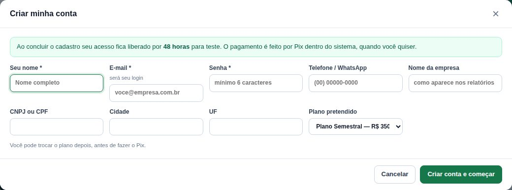
Formulário de criação de conta.
A conta nasce pronta para uso: com plano de contas, centros de custo, operações, unidades (saca de 60 kg, arroba, tonelada…), modalidades e produtos padrão. O acesso fica liberado por 48 horas para teste; uma faixa no topo mostra quanto tempo falta. Depois disso é preciso pagar o plano (capítulo 12). Nada do que você lançou é perdido.
Entrar no sistema
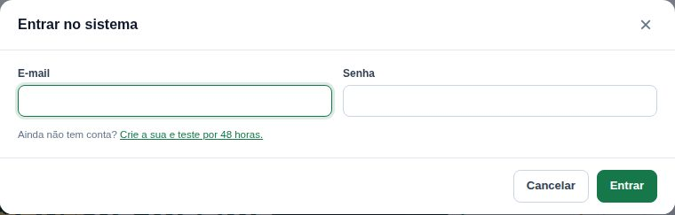
Tela de login.
Clique em Entrar no topo do site.
Digite e-mail e senha e clique em Entrar.
Esqueceu a senha?Peça ao administrador da sua empresa: em Cadastros → Usuários ele edita o seu usuário e digita uma senha nova.
Mensagem ao entrar
O que significa
E-mail ou senha inválidos
Confira se digitou certo. O e-mail não diferencia maiúsculas.
Seu usuário está bloqueado
O usuário foi bloqueado. Fale com o administrador.
Seu acesso terminou em dd/mm/aaaa
O usuário tinha acesso até uma data que já passou. Fale com o administrador.
Tela de pagamento em vez do sistema
O teste terminou, a assinatura venceu ou a empresa foi bloqueada. Veja o capítulo 12.
3. Primeiros passos
Siga esta ordem na primeira vez. Cada item leva poucos minutos e deixa o resto do sistema funcionando sozinho.
Dados da sua empresa — Cadastros → Empresas: CNPJ, endereço, telefone, logotipo e o texto fixo do contrato (cláusulas, foro). É o que aparece no contrato impresso.
Bancos e caixa — Cadastros → Bancos: cada conta corrente, poupança ou caixa interno, com o saldo inicial e a data desse saldo.
Usuários — Cadastros → Usuários: as pessoas da sua equipe (o plano inclui 3 usuários por empresa). Eles também aparecem como representante nos contratos.
Clientes e fornecedores — Cadastros → Clientes/Fornecedores: compradores, vendedores (produtores) e fornecedores, com as formas de pagamento de cada um.
Produtos, unidades e modalidades — confira os que já vêm prontos e ajuste ao seu negócio.
Tabela de ICMS — Cadastros → ICMS: gere as alíquotas do seu estado e confira com o contador (seção 5.7). Confira também se compradores e vendedores têm a UF preenchida.
Lance o primeiro contrato — Contratos → + Novo contrato (capítulo 6).
Contas contábeisVocê não precisa entender de contabilidade. O plano de contas já vem pronto e o sistema faz os lançamentos contábeis sozinho a cada contrato, título, baixa e movimento de caixa — por isso o DRE e o balancete “fecham” automaticamente.
4. Painel
É a primeira tela depois do login e resume a situação da empresa escolhida:
Quadro
O que mostra
Saldo disponível
Soma dos bancos e caixa hoje.
A receber / A pagar
Total em aberto, quanto está vencido e quanto vence no mês.
Previsão de saldo
Saldo + a receber − a pagar.
Movimento do mês
Entradas e saídas do caixa nos últimos meses, em gráfico.
Resultado do mês
Receita bruta e resultado líquido (competência) e saldo por conta.
Atalhos
+ Novo título a receber, + Novo título a pagar, Lançar no caixa e Ver DRE do mês.
5. Cadastros
Todos os cadastros ficam no menu Cadastros, organizados em abas. Em todas as abas o funcionamento é o mesmo:
+ Novo abre o formulário em branco; preencha e clique em Salvar.
Editar na linha abre o registro para alteração; Excluir remove (ou desativa, quando o registro já foi usado).
O campo Filtrar… procura em qualquer coluna da lista.
Campos com * são obrigatórios.
5.1 Clientes e Fornecedores
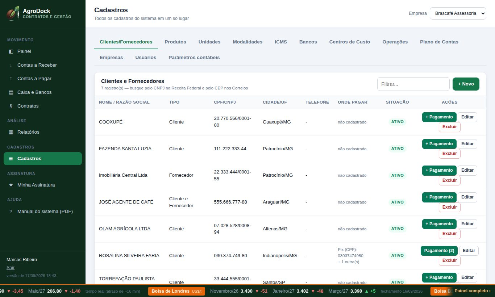
Lista de clientes e fornecedores, com a coluna “Onde pagar”.
É um cadastro único para compradores, vendedores e fornecedores. No campo Tipo escolha Cliente, Fornecedor ou Ambos; em Pessoa, Jurídica (CNPJ) ou Física (CPF).
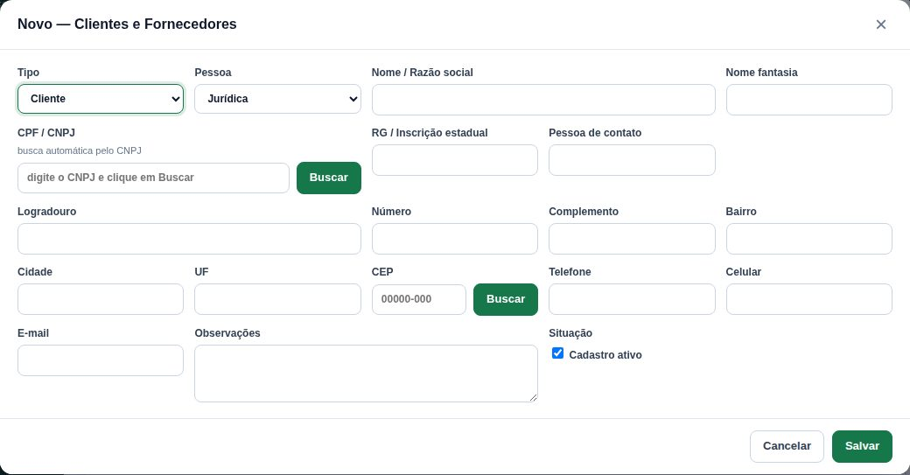
Formulário do cliente/fornecedor com os botões Buscar do CNPJ e do CEP.
Busca pelo CNPJ: digite o CNPJ e clique em Buscar. O sistema preenche razão social, nome fantasia, endereço, telefone e e-mail e mostra a situação cadastral e os sócios.
Busca pelo CEP: digite o CEP e clique em Buscar (ou apenas saia do campo). Logradouro, bairro, cidade e UF são preenchidos e o cursor vai para o número.
Comprador e vendedor do contratoPara aparecerem no contrato, compradores e vendedores precisam estar cadastrados aqui (tipo Cliente ou Ambos).
Formas de pagamento (onde pagar cada parceiro)
Na linha do parceiro, clique em Pagamento. Cadastre quantas formas ele tiver:
Pix — tipo da chave (CPF, CNPJ, e-mail, telefone ou aleatória) e a chave;
Depósito / TED — banco, agência, operação (Caixa), conta e tipo de conta;
Boleto, dinheiro, cartão ou outro.
Cada forma pode ter titular e CPF/CNPJ próprios. Uma delas fica como principal (a primeira cadastrada assume sozinha; para trocar, clique em Tornar principal). Na hora de dar baixa num título, essas contas aparecem no topo com o botão Copiar.
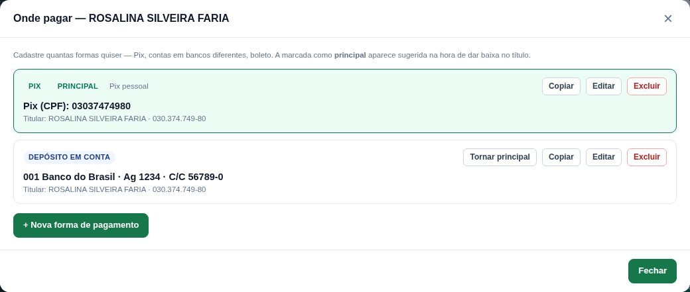
Formas de pagamento de um parceiro: Pix principal e conta para depósito.
5.2 Produtos, Unidades e Modalidades
Aba
Campos e uso
Produtos
Código, nome, unidade padrão e embalagem (ex.: CAFÉ ARÁBICA, saca de 60 kg, A GRANEL). Ao escolher o produto no contrato, unidade e embalagem vêm preenchidas.
Unidades
Código, nome e peso de conversão em kg. É o que calcula o peso total do contrato: 330 sacas × 60 kg = 19.800 kg.
Modalidades
Tipo de negócio: disponível, futuro, a fixar, CIF, FOB…
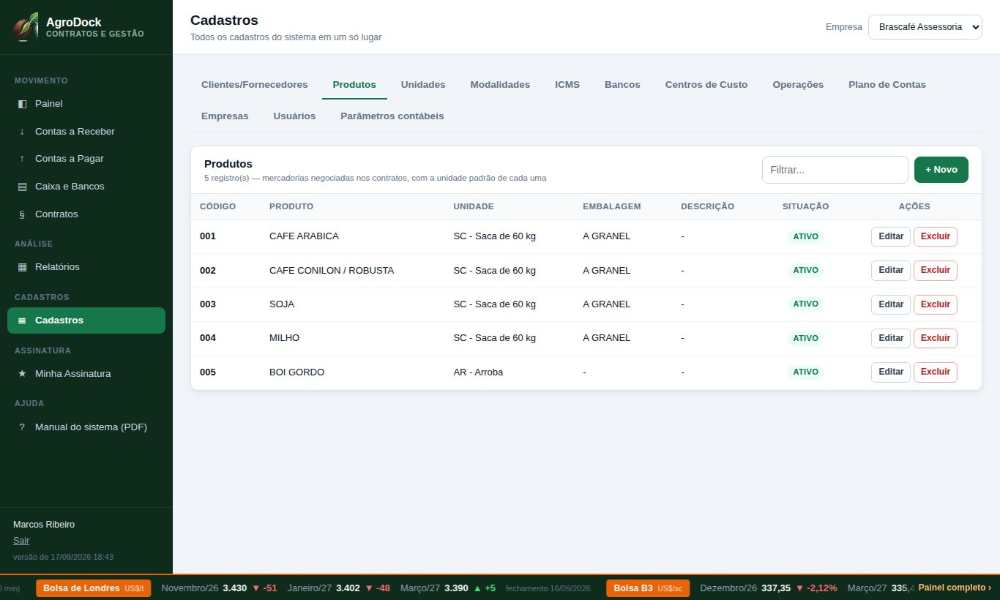
Produtos.
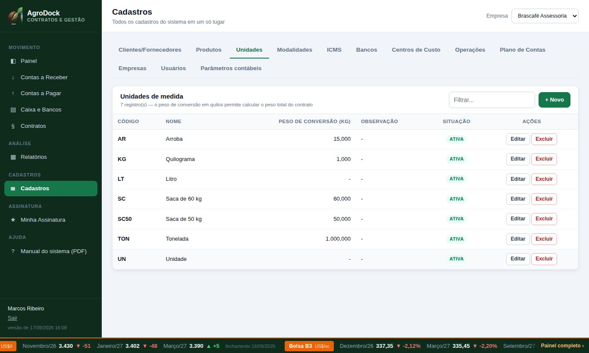
Unidades com peso de conversão.
5.3 Bancos
Cadastre cada conta onde o dinheiro entra ou sai: nome, banco, agência, conta, tipo (corrente, poupança, aplicação, cartão, caixa), saldo inicial e data do saldo inicial. Informe o saldo real do extrato na data escolhida — a partir dela o sistema calcula o saldo sozinho.
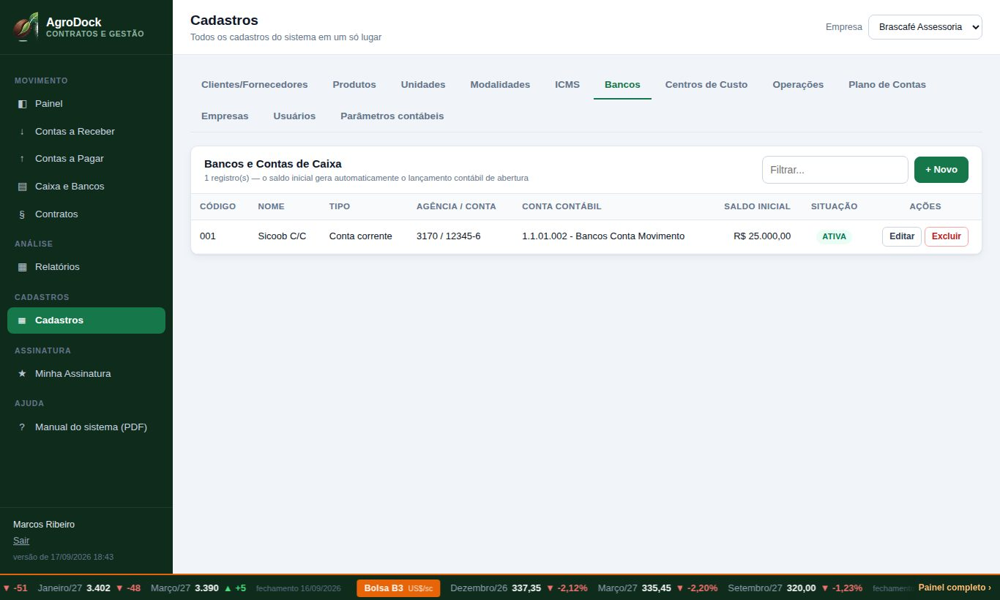
Bancos e contas de caixa.
5.4 Centros de custo, Operações e Plano de contas
Aba
Para que serve
Centros de custo
Separar receitas e despesas por área (administrativo, comercial, projetos…). Usado nos relatórios por centro de custo.
Operações
Natureza do lançamento (venda, compra, aluguel, folha…). Ao escolher a operação, o sistema sugere a conta contábil.
Plano de contas
Contas contábeis já prontas (112 contas). Só mexa se o seu contador pedir.
Dados da sua empresa: razão social, nome fantasia, CNPJ, inscrições, endereço (com busca por CEP), telefone, e-mail e responsável. Dois campos aparecem no contrato impresso:
Logotipo — escolha a imagem (PNG ou JPG). Ela vai para o cabeçalho do contrato.
Texto do contrato — cláusulas gerais, foro e observações fixas impressas no rodapé.
É possível ter mais de uma empresa na mesma conta; cada uma tem seus cadastros, lançamentos e relatórios. Troque de empresa no seletor do topo.
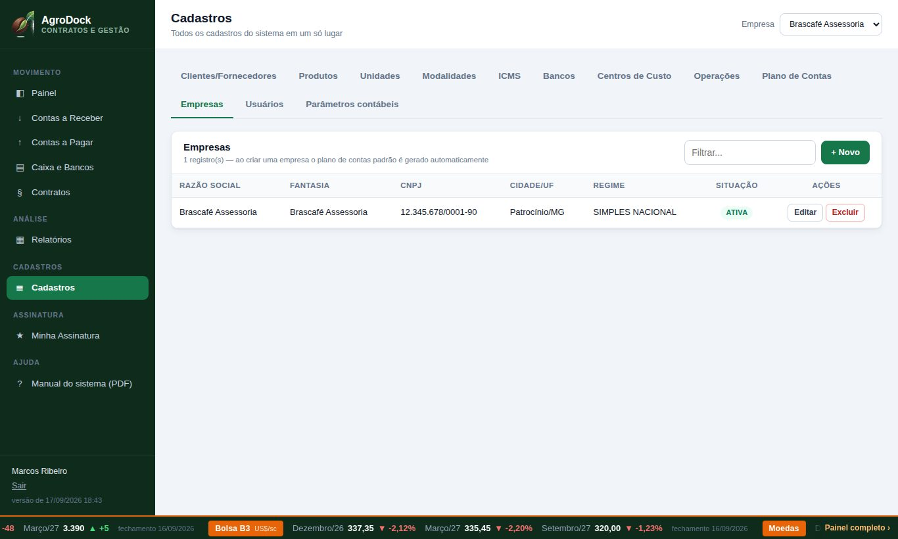
Cadastro de empresas.
5.6 Usuários
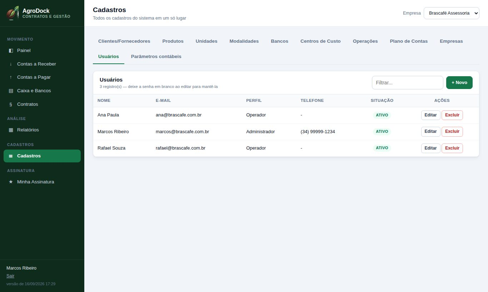
Usuários da empresa.
Informe nome, e-mail (login), senha, perfil e telefone. Ao editar, deixe a senha em branco para mantê-la — ou digite uma nova para trocar.
Perfis: Administrador (pode cadastrar e alterar usuários), Operador e Somente consulta (para identificar quem deve apenas consultar).
Para tirar o acesso de alguém, desmarque Usuário ativo. O histórico dos lançamentos é mantido.
Limite de usuáriosCada empresa pode ter 3 usuários ativos (contando o responsável). Ao tentar cadastrar o quarto, o sistema avisa e não deixa. Para aumentar o limite, fale com o suporte: após a confirmação do pagamento, o limite é ampliado.
5.7 Tabela de ICMS
É a grade que o contrato usa para calcular o ICMS: UF do vendedor × UF do comprador e a alíquota (%). Por exemplo: vendedor de MG e comprador de SP = 12%.
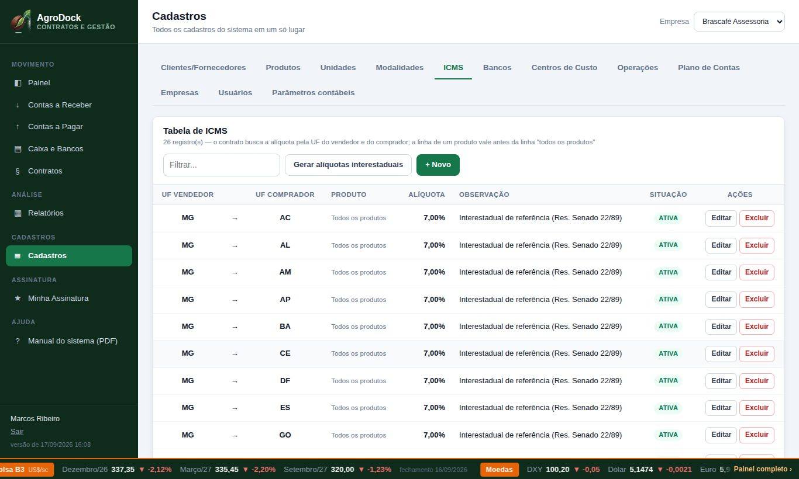
Cadastros → ICMS: cada linha é um par de estados com a sua alíquota.
Campo
O que preencher
UF do vendedor
Estado de onde sai a mercadoria.
UF do comprador
Estado para onde ela vai.
Alíquota de ICMS (%)
Digite só o número: 12 para 12%.
Produto
Deixe Todos os produtos para valer em qualquer contrato. Escolha um produto quando ele tiver alíquota diferente — essa linha vale antes da linha geral do mesmo par de estados.
Observação
Anote o fundamento: diferimento, redução de base, orientação do contador…
Alíquota ativa
Desmarque para deixar de usar a linha sem apagá-la.
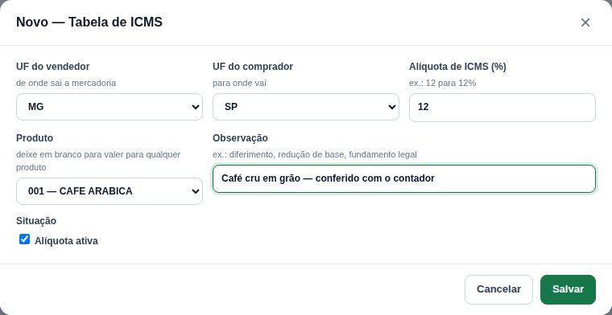
Nova alíquota só para o café, de MG para SP.
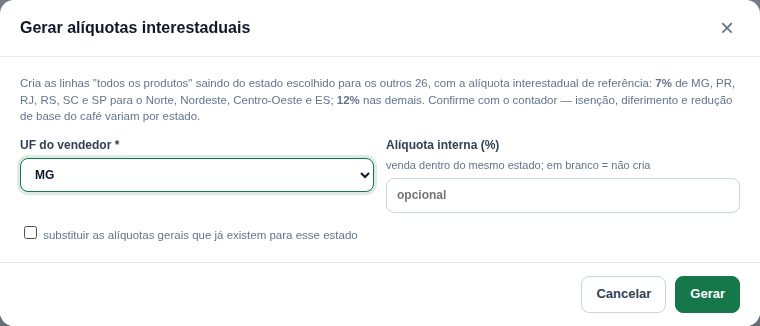
Gerar as alíquotas interestaduais de um estado.
Gerar alíquotas interestaduais
Para não digitar estado por estado, clique em Gerar alíquotas interestaduais, escolha a UF do vendedor (ex.: MG) e clique em Gerar. O sistema cria as linhas para os outros 26 estados com a alíquota de referência:
7% saindo de MG, PR, RJ, RS, SC ou SP para os estados do Norte, Nordeste, Centro-Oeste e para o Espírito Santo;
12% nas demais operações entre estados (ex.: MG → SP, MG → RJ, GO → MG).
Opcionalmente, informe a alíquota interna (venda dentro do mesmo estado). As linhas que você já cadastrou são mantidas, a não ser que marque substituir.
Confirme com o contadorA alíquota gerada é só um ponto de partida. Isenção, diferimento e redução de base do café e de outros produtos agrícolas mudam de estado para estado. Ajuste a tabela conforme a orientação do seu contador.
6. Contratos
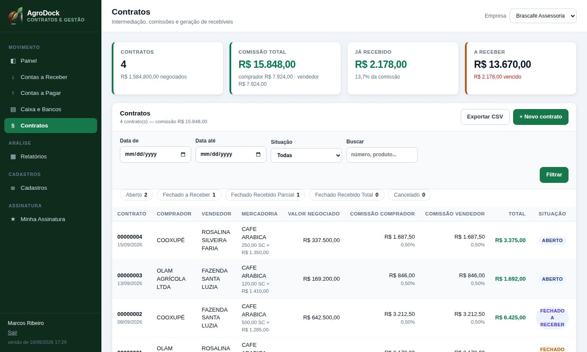
Lista de contratos: tipo, partes, valores e situação de cada um.
No topo da lista aparecem a quantidade de contratos, quanto eles trazem a receber, quanto sai a pagar e quanto já foi liquidado. Use os filtros de data, tipo, situação e a busca por número ou produto; os botões de situação logo abaixo filtram com um clique.
6.1 Os três tipos de contrato
O tipo é a primeira coisa que você escolhe no formulário e decide quem são as partes e quais títulos o contrato gera:
Tipo
Quem são as partes
O que o contrato gera
Corretagem intermediação
Comprador e vendedor, os dois de fora. Sua empresa só aproxima as partes.
Contas a receber das comissões do comprador e do vendedor.
Compra de café
Quem compra é a sua empresa: você escolhe só o fornecedor (o produtor, a cooperativa…).
Conta a pagar do fornecedor, com o valor do café.
Venda de café
Quem vende é a sua empresa: você escolhe só o cliente (a torrefação, o exportador…).
Conta a receber do cliente, com o valor do café.
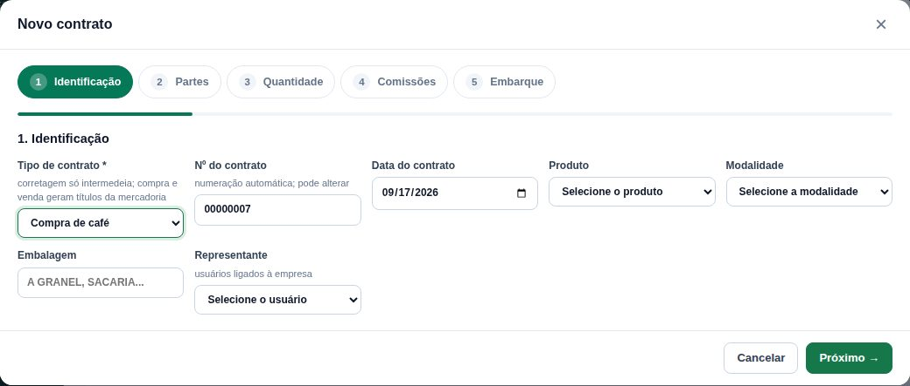
Etapa 1: escolha do tipo do contrato.
Agente: vale nos três tiposSe alguém intermediou o negócio, informe o agente na etapa Partes, com o percentual sobre o valor do contrato ou o valor combinado. A comissão dele vira uma conta a pagar da sua empresa — classificada em Comissões sobre Vendas — com vencimento próprio, se você quiser.
6.2 Lançar um contrato
Clique em + Novo contrato. O formulário é dividido em cinco etapas; use Próximo → e ← Voltar, ou clique direto no nome da etapa. O resumo do cálculo fica sempre visível.
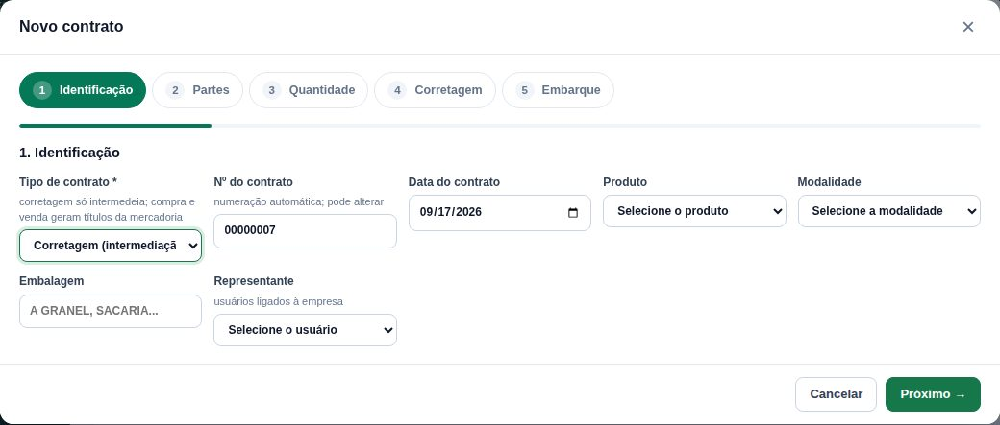
Etapa 1 — Identificação.
Etapa
O que preencher
1. Identificação
Tipo do contrato (corretagem, compra ou venda), Nº do contrato (já vem sugerido: 00000001, 00000002… — pode digitar outro), data, produto, modalidade, embalagem e representante (um dos usuários da empresa).
2. Partes
Conforme o tipo: na corretagem, comprador e vendedor (não podem ser o mesmo cadastro); na compra, só o fornecedor; na venda, só o cliente. Aqui também entra o agente (opcional) com a comissão dele. Um aviso na tela lembra quem paga e quem recebe.
3. Quantidade
Quantidade, unidade, preço unitário e diferencial. O valor negociado (quantidade × (preço + diferencial)) e o peso total são calculados na hora. Se o valor foi fechado direto, digite-o. Logo abaixo, o bloco ICMS traz a alíquota da tabela e o valor do imposto (seção 6.6).
4. Corretagem Comissões
Só na corretagem: percentual do comprador e do vendedor, independentes. O valor em reais aparece calculado; se a comissão combinada foi um valor fixo, digite o valor. Na compra e na venda esta etapa fica vazia — a comissão do agente é informada na etapa Partes.
5. Embarque
Datas de embarque e de pagamento, local de coleta e de descarga, números de compra e venda e observações. Clique em Salvar.
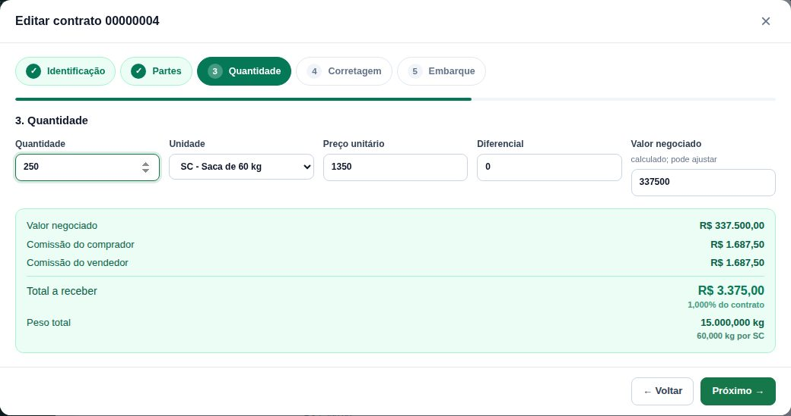
Etapa 3 — quantidade, preço, ICMS e cálculo.
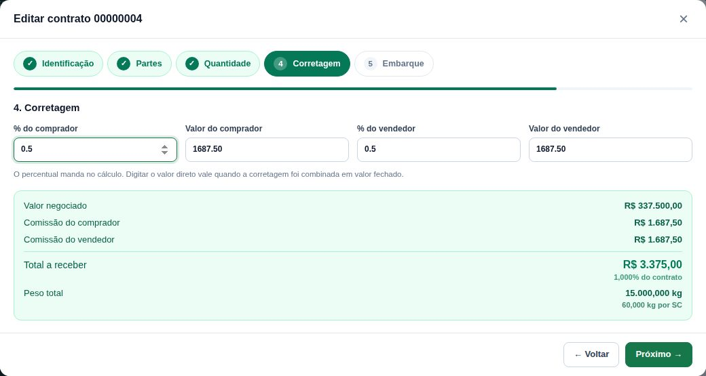
Etapa 4 — corretagem dos dois lados.
Exemplo de corretagem330 sacas a R$ 1.320,00 = R$ 435.600,00. Com 0,50% de cada lado: R$ 2.178,00 do comprador + R$ 2.178,00 do vendedor = R$ 4.356,00 de comissão.
Compra: o que muda na tela
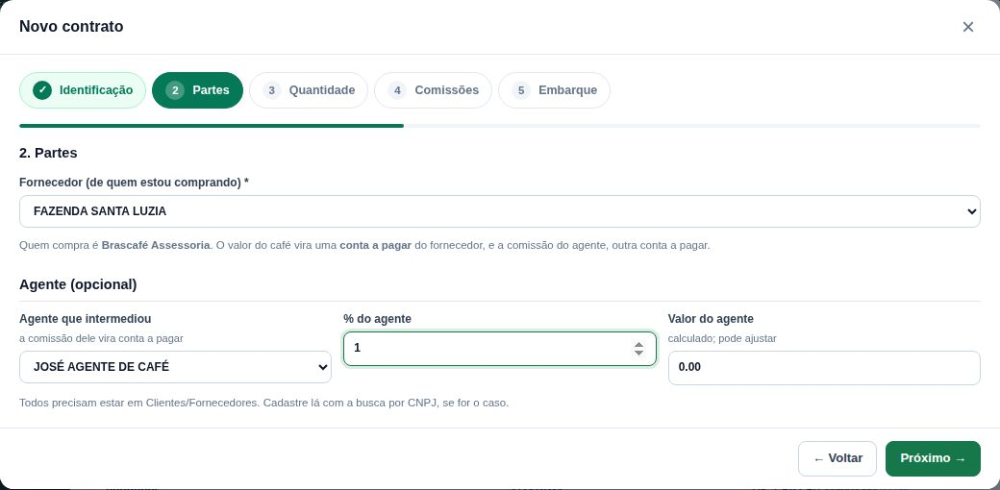
Na compra você escolhe só o fornecedor — e o agente, se houver.
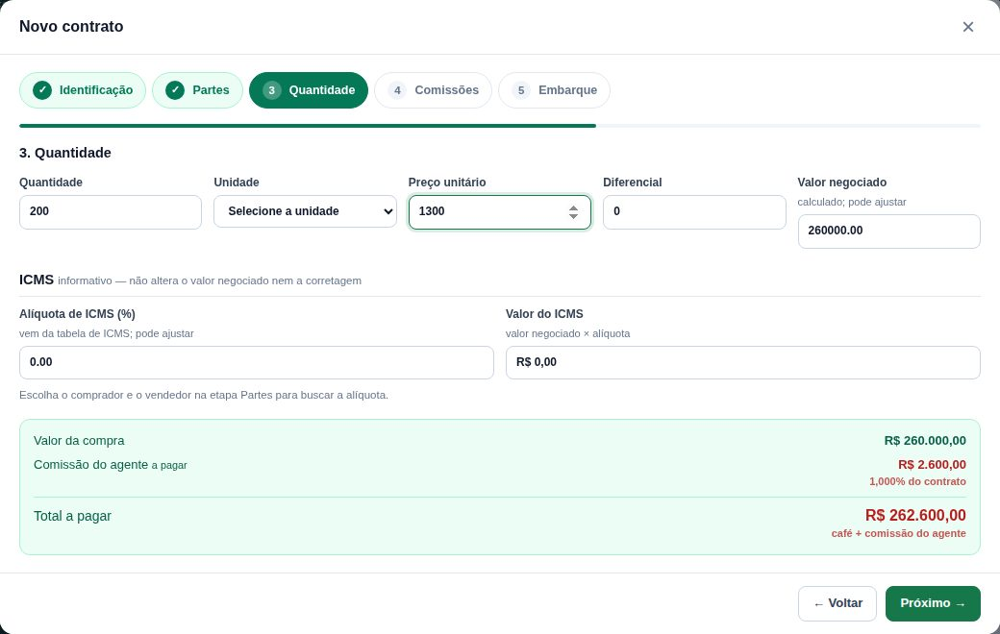
O resumo mostra o total a pagar: café + comissão do agente.
Na venda é o espelho disso: você escolhe o cliente, e o resumo mostra quanto há a receber dele e quanto sai para o agente.
6.3 Abrir o contrato e gerar os títulos
Na lista, clique em Abrir. A ficha mostra as partes, a mercadoria, os valores e a situação financeira (quanto virou título, quanto já foi pago ou recebido, quanto falta e quanto está vencido).
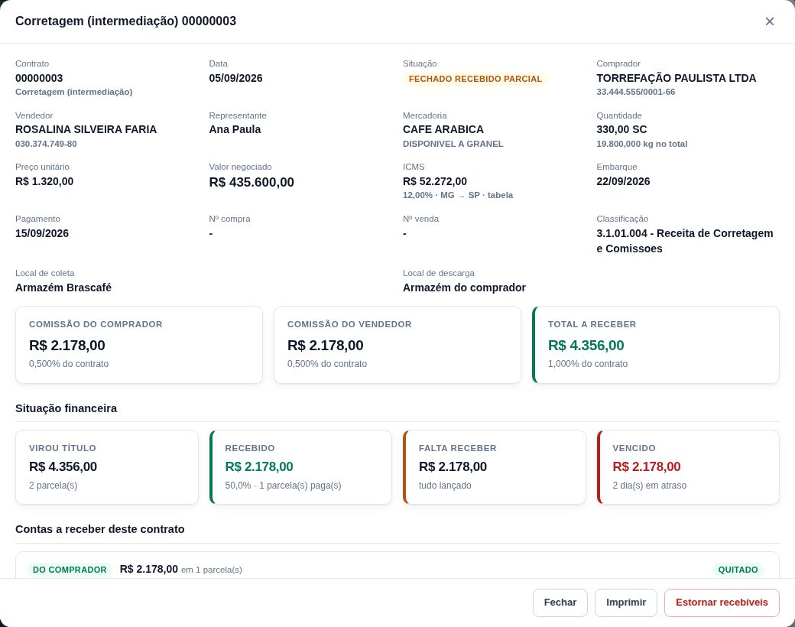
Corretagem em aberto, pronta para gerar as contas a receber.
Confira o vencimento (vem a data de pagamento do contrato) e, se houver agente, o vencimento da comissão dele.
Para parcelar, informe o número de parcelas e a periodicidade (mensal ou a cada N dias).
Marque o que gerar: na corretagem, a comissão do comprador e/ou do vendedor; na compra e na venda, o título do café e/ou a comissão do agente.
Clique no botão verde — Gerar contas a receber, Gerar contas a pagar ou Gerar títulos do contrato, conforme o tipo. Os títulos aparecem em Contas a Receber / a Pagar, com o número do contrato como documento.
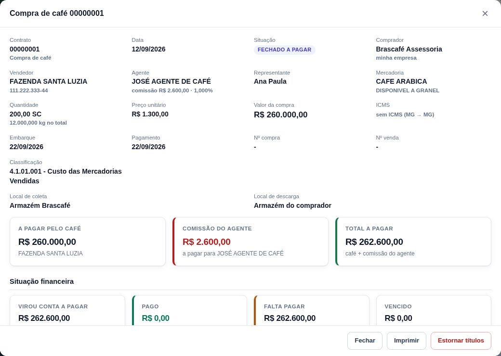
Compra já gerada: conta a pagar do café e a do agente.
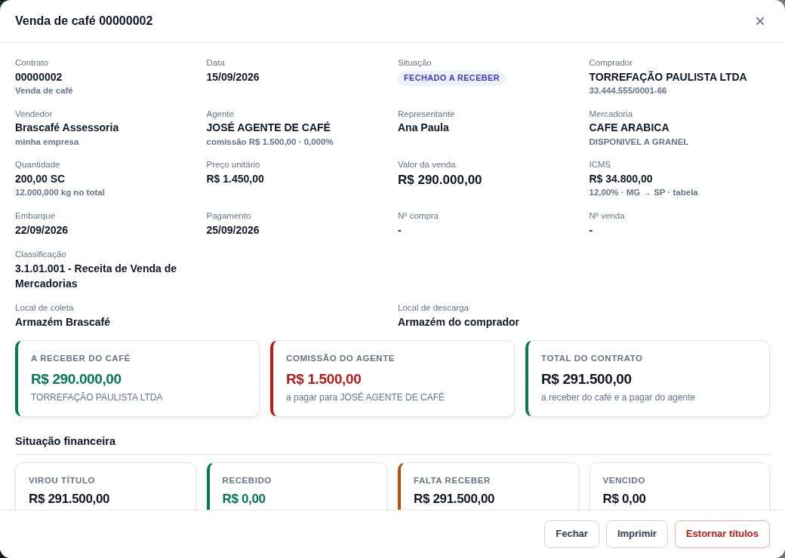
Venda já gerada: conta a receber do cliente e a pagar do agente.
Enquanto nenhuma parcela foi paga ou recebida, Estornar títulos apaga os títulos e o contrato volta para Aberto (para corrigir e gerar de novo). Contrato com títulos gerados não pode ser editado.
6.4 Situação do contrato
A situação muda sozinha, conforme o dinheiro entra — ou sai, na compra:
Situação
Quando aparece
Aberto
Contrato lançado; as comissões ainda não viraram títulos.
Fechado a Receber Fechado a Pagar na compra
Os títulos foram gerados, nada pago nem recebido.
Fechado Recebido Parcial Pago Parcial na compra
Parte já foi baixada.
Fechado Recebido Total Pago Total na compra
Tudo pago ou recebido.
Cancelado
Cancelado na ficha (Cancelar contrato). Pode ser reaberto com Reabrir contrato.
6.5 Imprimir o contrato (PDF)
Clique em Imprimir na lista ou na ficha. O título da folha acompanha o tipo — Contrato de intermediação, Contrato de compra ou Contrato de venda — e, na compra e na venda, a sua empresa aparece no lado dela, com o agente num quadro à parte e um bloco de pagamento/recebimento em vez da corretagem. Abre a folha A4 do contrato — com logotipo e dados da sua empresa, comprador e vendedor com endereço e dados bancários/Pix, mercadoria, quantidade, peso total, valor por extenso, ICMS, corretagem, embarque, cláusulas e campos de assinatura — e a janela de impressão do navegador. Para gerar o arquivo, escolha Salvar como PDF no destino.
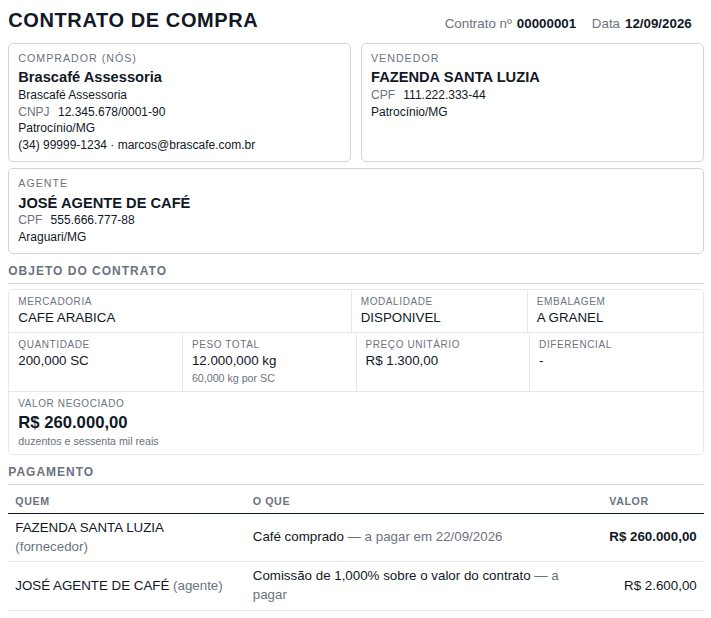
Folha impressa de um contrato de compra, com o agente e o bloco de pagamento.
6.6 ICMS no contrato e na impressão
O ICMS é calculado sozinho a partir da tabela de ICMS (seção 5.7):
O sistema lê a UF do cadastro do vendedor e a UF do cadastro do comprador — na compra e na venda, um dos lados é a UF da sua empresa (Cadastros → Empresas).
Procura na tabela a linha desse par de estados — primeiro a do produto do contrato; se não houver, a de “todos os produtos”.
Calcula ICMS = valor negociado × alíquota e mostra na etapa 3 e no resumo do cálculo.
ExemploVendedor em Patrocínio/MG, comprador em Santos/SP, 330 sacas × R$ 1.320,00 = R$ 435.600,00. Com 12%: ICMS de R$ 52.272,00.
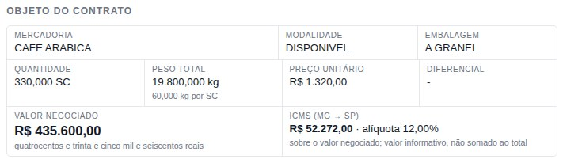
Na folha impressa o ICMS aparece ao lado do valor negociado (a ficha do contrato também mostra).
Alíquota diferente neste contrato: digite outra no campo Alíquota de ICMS (%). A linha abaixo passa a mostrar “alíquota digitada”; o link usar a da tabela desfaz.
Aviso “Falta a UF no cadastro…”: complete a UF do comprador ou do vendedor em Clientes/Fornecedores e abra o contrato de novo.
Aviso “Não há alíquota cadastrada para…”: cadastre o par de estados em Cadastros → ICMS, ou digite a alíquota no contrato.
O ICMS é informativoEle não soma no valor negociado e não muda a corretagem. Serve para as partes saberem quanto de imposto incide sobre o negócio.
O contrato guarda a alíquota e o valor do dia em que foi salvo. Se você mudar a tabela depois, os contratos já lançados não mudam — só quando forem editados e salvos de novo.
7. DF-e — notas fiscais eletrônicas
Toda nota fiscal eletrônica emitida contra o CNPJ da sua empresa fica guardada na SEFAZ. O AgroDock busca essas notas direto lá, sem depender do contador nem do e-mail do fornecedor: DF-e (notas fiscais) no menu.
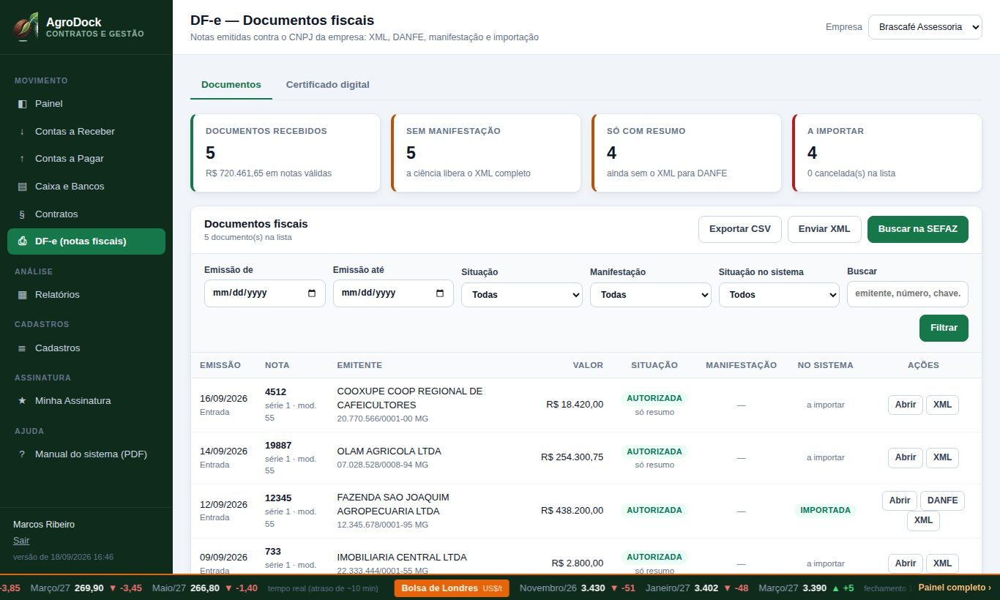
Tela do DF-e: indicadores no topo, filtros e a lista de documentos recebidos.
O que a tela faz:
Baixa os XML de tudo o que foi emitido contra o seu CNPJ nos últimos 90 dias;
Imprime a DANFE (a folha da nota) e deixa salvar o XML no computador;
Manifesta o destinatário — ciência, confirmação, desconhecimento ou operação não realizada;
Importa a nota para o sistema: itens, pagamentos e duplicatas, completando o cadastro do fornecedor e dos produtos e, se você quiser, já gerando a conta a pagar.
7.1 Certificado digital A1
Para falar com a SEFAZ o sistema precisa do certificado digital A1 da empresa — o arquivo .pfx (ou .p12) com a senha. É o mesmo certificado que o contador usa para emitir nota.
A1, não A3Certificado A3 (cartão ou token conectado no computador) não funciona em sistema na nuvem: ele exige o dispositivo plugado na máquina. Peça ao seu contador ou à certificadora o A1 em arquivo.
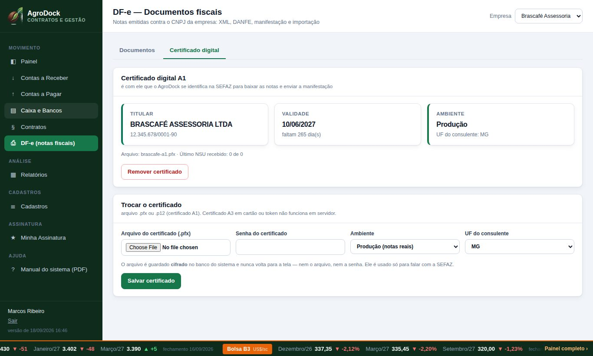
Aba Certificado digital: titular, validade, ambiente e o envio do arquivo.
Abra a aba Certificado digital.
Escolha o arquivo .pfx, digite a senha e deixe o ambiente em Produção (é onde ficam as notas de verdade; Homologação é só para teste e não traz nada).
Clique em Salvar certificado.
O sistema confere na hora se a senha está certa, se o certificado não está vencido e se o CNPJ dele é o mesmo da empresa selecionada. Depois de salvo, a tela mostra o titular, o CNPJ e quantos dias faltam para vencer — e avisa em vermelho quando estiver perto do fim.
O arquivo fica guardado com segurançaO .pfx e a senha são gravados cifrados no banco e nunca voltam para a tela. Eles são usados apenas na conversa com a SEFAZ. Só quem é administrador da conta pode cadastrar ou remover o certificado.
7.2 Buscar os documentos na SEFAZ
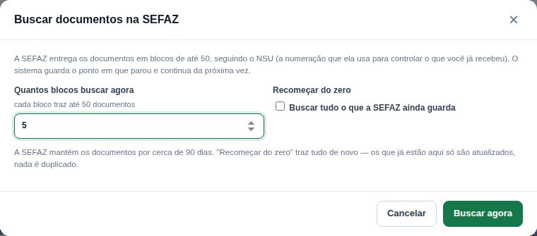
Quantos blocos buscar de uma vez.
Clique em Buscar na SEFAZ. A SEFAZ entrega os documentos em blocos de até 50, na ordem em que foram emitidos, e o sistema guarda o ponto em que parou (o NSU) — na próxima vez ele continua dali, sem repetir.
Quantos blocos buscar agora — comece com 5. Se ainda faltar documento, o sistema avisa e é só clicar de novo.
Recomeçar do zero — traz tudo o que a SEFAZ ainda guarda (cerca de 90 dias). Nada é duplicado: o que já está aqui só é atualizado.
Quando o fornecedor mandar o XML por e-mail, use Enviar XML para colocar o arquivo na mesma lista.
7.3 A lista e os filtros
Os quatro indicadores do topo respondem de um olhar: quantos documentos chegaram, quantos ainda estão sem manifestação, quantos vieram só com o resumo e quantos ainda faltam importar. Os filtros são por período de emissão, situação (autorizada, cancelada, denegada), manifestação e situação no sistema, além da busca por emitente, número ou chave.
Coluna
O que significa
Situação
Como a nota está na SEFAZ. Cancelada aparece sozinho quando chega o evento de cancelamento do emitente.
só resumo
A SEFAZ entregou apenas os dados principais (emitente, valor, chave). O XML completo vem depois que você dá ciência da operação.
Manifestação
O que você já informou à SEFAZ sobre essa nota.
No sistema
Importada = os itens e os pagamentos já estão gravados aqui.
Em cada linha: Abrir mostra a ficha, DANFE abre a folha da nota e XML salva o arquivo no computador (o que o contador pede).
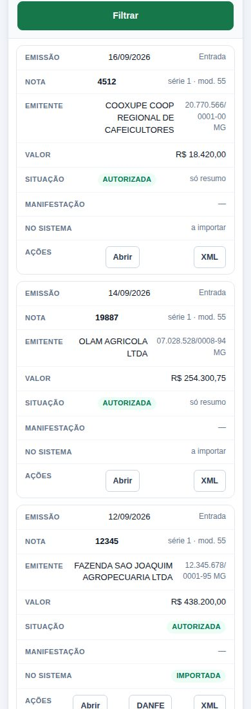
No celular cada nota vira um cartão.
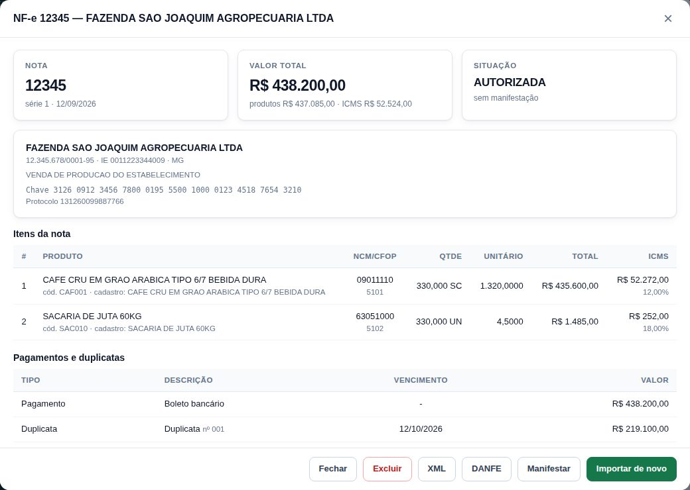
Ficha da nota: emitente, chave de acesso, itens e as duplicatas.
No celular a lista vira cartões, um por nota, com os mesmos botões: dá para conferir uma nota, imprimir a DANFE e dar ciência da operação de qualquer lugar.
7.4 Manifestação do destinatário
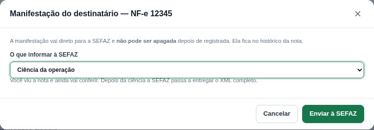
As quatro manifestações.
Na ficha da nota, clique em Manifestar e escolha:
Ciência da operação — você viu a nota e ainda vai conferir. É essa que libera o XML completo na próxima busca.
Confirmada — a mercadoria chegou mesmo. É o aceite definitivo.
Desconhecida — a empresa não reconhece essa operação (ninguém comprou nada desse emitente).
Operação não realizada — foi cancelada, houve devolução total ou a mercadoria não chegou. Exige justificativa de pelo menos 15 letras.
A manifestação é definitivaEla vai direto para a SEFAZ e não pode ser apagada — fica no histórico da nota. Use Desconhecida e Operação não realizada com cuidado: são a forma legal de se defender de uma nota indevida contra o seu CNPJ.
PrazosA legislação dá prazos curtos para confirmar ou recusar uma nota (em regra, alguns dias a partir da emissão, variando por estado e por operação). Confira com o seu contador — o AgroDock registra o evento, mas quem responde pelo prazo é a empresa.
7.5 DANFE
DANFE abre a folha da nota numa aba nova, com código de barras da chave, itens, impostos e duplicatas. Para guardar em PDF, clique em Imprimir / salvar em PDF e escolha “Salvar como PDF” na janela do navegador.
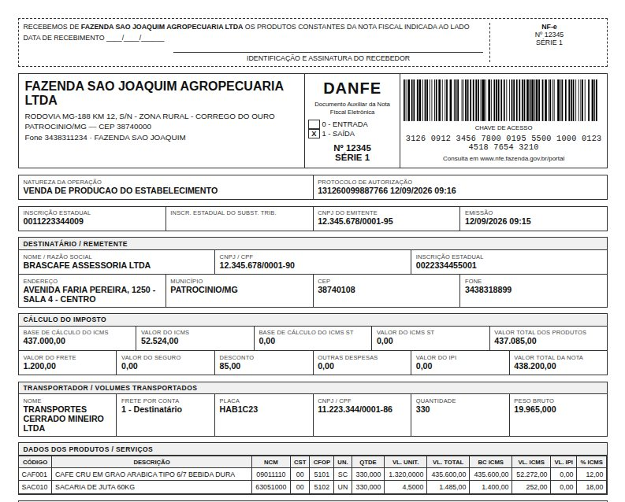
DANFE gerada a partir do XML autorizado.
A DANFE só sai com o XML completo. Se a nota estiver como “só resumo”, dê ciência da operação e busque de novo na SEFAZ.
7.6 Importar a nota para o sistema
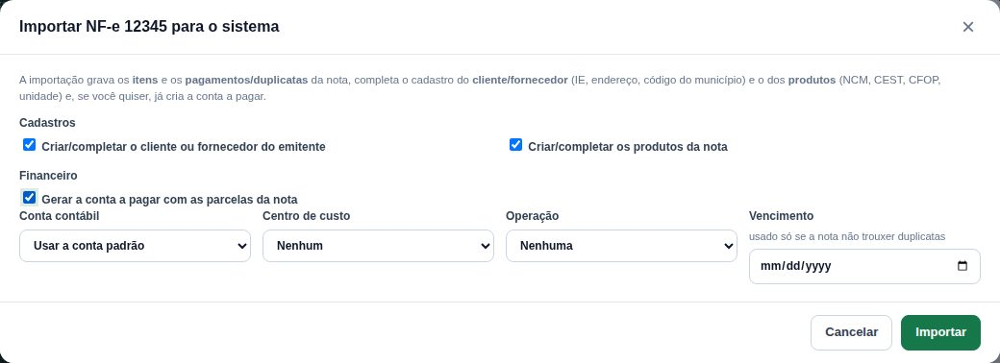
Opções da importação.
Na ficha, Importar faz tudo isto de uma vez:
grava os itens da nota (produto, NCM, CFOP, quantidade, valor e impostos);
grava as formas de pagamento e as duplicatas, com número e vencimento;
cria (ou completa) o cliente/fornecedor do emitente, trazendo do XML a inscrição estadual, o endereço e o código do município;
cria (ou completa) os produtos no cadastro, com NCM, CEST, CFOP, unidade e CST;
se você marcar, gera a conta a pagar já classificada, com uma parcela para cada duplicata da nota.
O sistema não sobrescreve o que você já tinha digitado: ele só preenche o que estiver em branco. E não gera dois títulos para a mesma nota — para refazer, exclua o título primeiro em Contas a Pagar.
Nota de venda da sua empresaQuando o emitente é o seu próprio CNPJ, o sistema entende que é uma saída e oferece gerar a conta a receber em vez da conta a pagar.
7.7 Dados fiscais nos cadastros
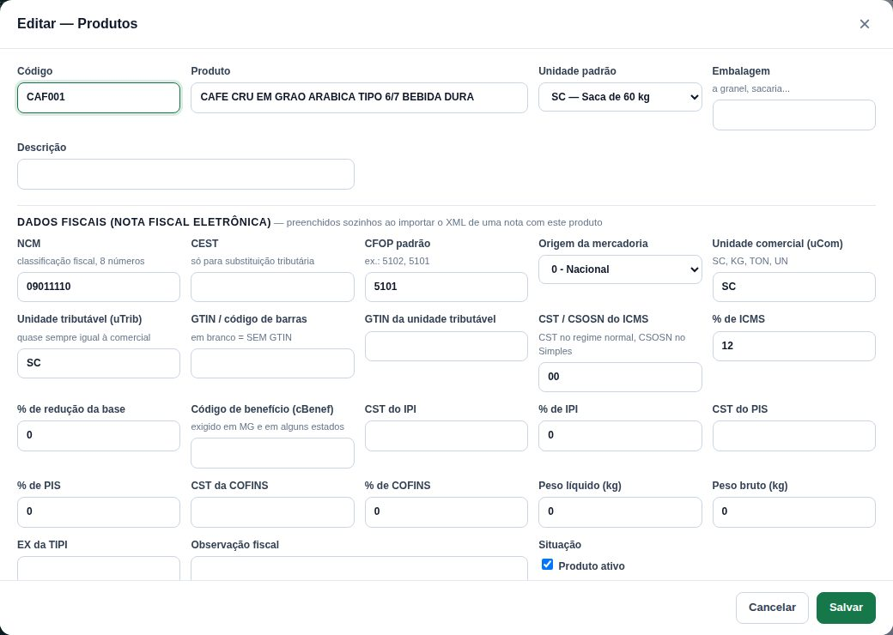
Cadastro de produto com o bloco de dados fiscais.
Para a nota bater com o cadastro, Produtos e Clientes/Fornecedores ganharam um bloco Dados fiscais.
No produto: NCM, CEST, CFOP padrão, origem, unidade comercial e tributável, GTIN, CST/CSOSN e as alíquotas de ICMS, IPI, PIS e COFINS.
No cliente/fornecedor: indicador de inscrição estadual, código do município (IBGE), inscrição municipal, Suframa e regime tributário.
Você não precisa digitar nada disso à mão: na primeira nota importada com aquele produto, o sistema preenche sozinho.
8. Contas a receber e a pagar
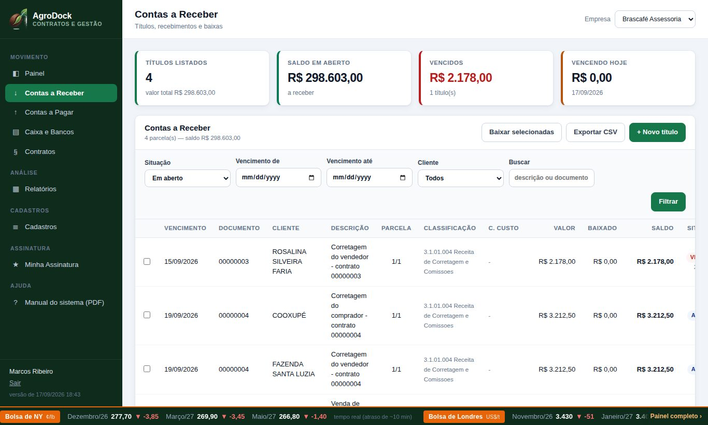
Contas a Receber: indicadores, filtros e lista de parcelas.
As duas telas funcionam igual. No topo, os totais (em aberto, vencidos, vencendo hoje). Filtre por situação (Em aberto, Vencidas, Todas…), período de vencimento, cliente/fornecedor e texto.
8.1 Novo título
Clique em + Novo título e escolha:
Lançamento simples — uma classificação e uma parcela. Preencha descrição, documento, cliente/fornecedor, operação, datas, valor, conta contábil, centro de custo e vencimento. Marque Já pago / Já recebido e a conta bancária para dar baixa na hora (compra ou venda à vista).
Lançamento múltiplo — divide o valor em várias contas e centros de custo (+ Adicionar linha) e em várias parcelas (Gerar parcelas, mensal ou a cada N dias). A soma do rateio e a soma das parcelas precisam bater com o valor total.
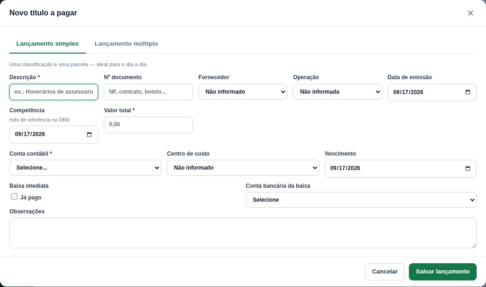
Novo título a pagar — lançamento simples.
8.2 Dar baixa (receber ou pagar)
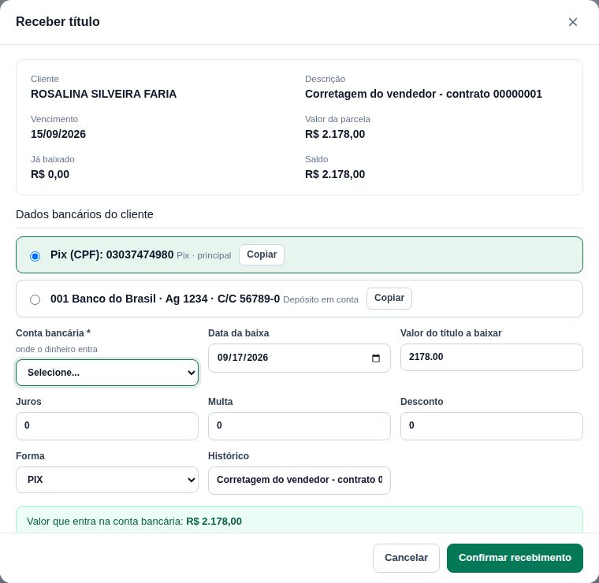
Baixa de um título, com os dados bancários do parceiro no topo.
Na linha da parcela, clique em Receber (ou Pagar).
No topo aparecem as formas de pagamento do parceiro; a principal já vem marcada. Copiar copia a chave Pix ou os dados da conta.
Escolha a conta bancária onde o dinheiro entra/sai e a data.
Informe juros, multa e desconto, se houver. O valor final aparece no rodapé.
Para baixa parcial, digite um valor menor que o saldo: a parcela fica Parcial com o restante em aberto.
Clique em Confirmar recebimento (ou pagamento).
Baixa em lote: marque várias parcelas na lista e clique em Baixar selecionadas.
Ver o título:Ver mostra os dados, as parcelas e o histórico de baixas.
Estornar uma baixa: em Ver, clique em Estornar ao lado da baixa. O valor sai do caixa e a parcela volta a ficar em aberto.
Excluir título: em Ver → Excluir título (só sem baixas).
9. Caixa e bancos
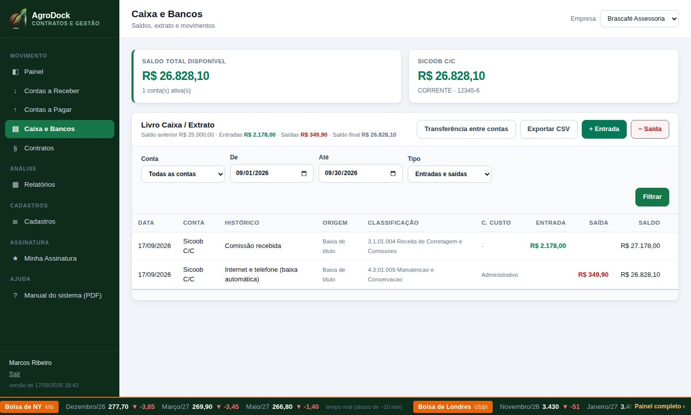
Caixa e Bancos: saldos por conta e extrato com saldo acumulado.
No topo, o saldo total e o saldo de cada conta.
O extrato mostra cada movimento com saldo acumulado linha a linha. Filtre por conta, período e tipo; exporte em CSV.
+ Entrada e − Saída lançam movimentos avulsos que não vêm de títulos (tarifa bancária, aporte, resgate), com conta contábil e centro de custo.
Transferência entre contas tira de uma conta e coloca em outra (ex.: saque do banco para o caixa), gerando os dois lados.
ConferênciaCompare o saldo de cada conta com o extrato do banco. Se não bater, confira baixas lançadas na conta errada ou tarifas ainda não lançadas.
10. Relatórios
Em Relatórios, escolha a aba, o período e os filtros e clique em Gerar. Todos têm CSV (planilha) e Imprimir.
Relatório
O que mostra
DRE
Receitas, custos, despesas e resultado, por competência ou caixa, com % sobre a receita e comparação com o período anterior.
Balancete
Saldo anterior, débitos, créditos e saldo atual de cada conta contábil.
Contas a receber / a pagar
Títulos por vencimento, emissão ou pagamento, com atraso agrupado (a vencer, 1–30, 31–60, 61–90, +90 dias).
Fluxo de caixa
Entradas, saídas e saldo por dia ou mês, com projeção dos títulos em aberto.
Contratos
Cada contrato com comissão, quanto virou título, recebido, falta receber e vencido; resumo por situação, comprador, representante, produto ou mês.
Por centro de custo / conta / operação / cliente-fornecedor
Receitas e despesas agrupadas.
Razão contábil
Todos os lançamentos de uma conta, com contrapartida e saldo.
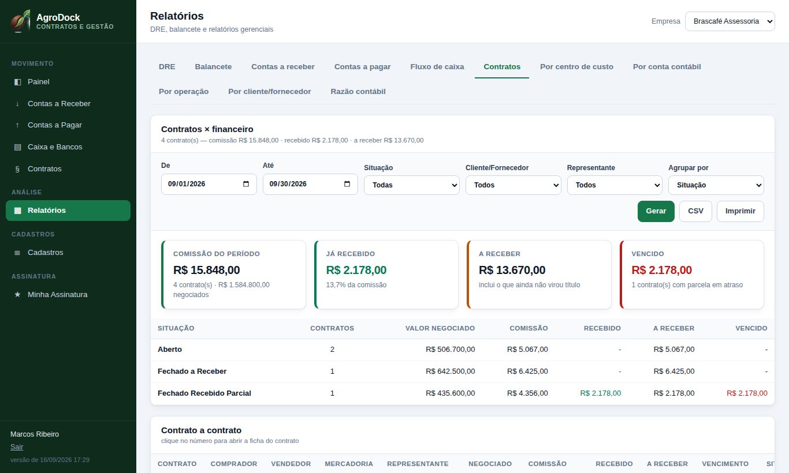
Relatório de contratos × financeiro.
11. Cotações e Mercado do Café
11.1 Faixa de cotações no rodapé
No rodapé do site e de todas as telas do sistema passa uma faixa com as cotações do café e das moedas, sempre atualizadas:
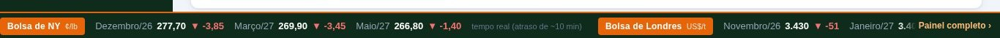
Faixa de cotações: Bolsa de NY, Londres, B3 e moedas. À direita, o atalho “Painel completo”.
Grupo
O que mostra
Bolsa de NY
Café arábica (¢/lb), os 3 próximos vencimentos, com poucos minutos de atraso.
Bolsa de Londres
Café robusta (US$/t), fechamento do último pregão.
Bolsa B3
Café arábica 4/5 (US$/saca), fechamento do último pregão, variação em %.
Moedas
DXY, dólar, euro e dólar Ptax do Banco Central.
Passe o mouse sobre a faixa para ela parar. Seta verde ▲ = alta; vermelha ▼ = queda. Quando uma fonte está fora do ar, o grupo continua com o último valor disponível.
11.2 Painel Mercado do Café
Clique na faixa (ou em Painel completo ›) para abrir o painel numa nova aba. Ele não precisa de login — dá para mandar o endereço para um cliente. No topo ficam as cotações de agora; abaixo, três abas.
Bolsas e indicadores
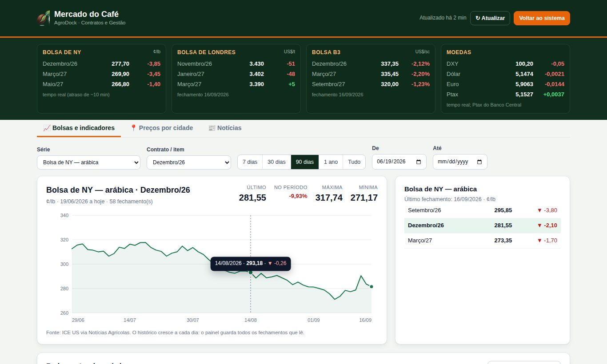
Histórico do contrato de dezembro em NY nos últimos 90 dias.
Escolha a Série (NY, Londres, B3, Indicador Cepea/Esalq, dólar, ou um preço do mercado físico) e o Contrato / item.
Escolha o período: 7 dias, 30 dias, 90 dias, 1 ano, Tudo — ou as datas De e Até.
O gráfico mostra a evolução; passe o mouse (ou toque) para ver o valor de cada dia. Ao lado: último valor, variação no período, máxima e mínima.
O quadro Último fechamento lista todos os contratos; clique num deles para ver o histórico.
Baixar planilha (CSV) leva os fechamentos do período para o Excel.
O histórico cresce a cada diaAs fontes publicam só os últimos pregões, mas o AgroDock guarda todos os fechamentos que lê. Quanto mais tempo o sistema estiver no ar, maior o período disponível no filtro.
Preços por cidade
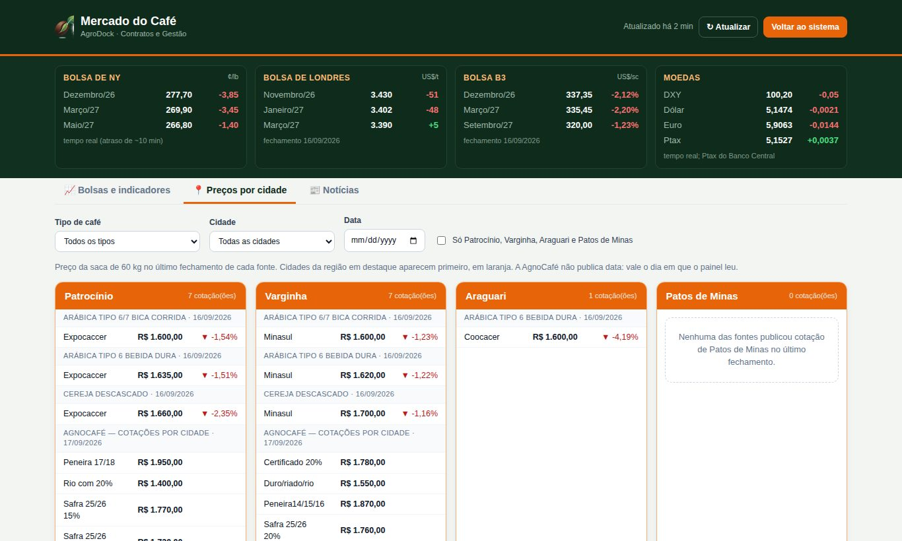
Preço da saca por cidade. Patrocínio, Varginha, Araguari e Patos de Minas aparecem primeiro, em laranja.
Cada cartão é uma cidade, com o preço da saca de 60 kg por tipo de café (arábica tipo 6/7, tipo 6 bebida dura, cereja descascado, conilon) nas cooperativas — Expocaccer, Minasul, Coocacer, Cooxupé e outras — e as cotações por cidade da AgnoCafé.
Filtre por tipo de café, cidade ou data (para ver os preços de um dia passado).
Marque Só Patrocínio, Varginha, Araguari e Patos de Minas para ver só a região.
📈 Histórico no cartão mostra a evolução daquela cidade nos últimos 90 dias.
Quando nenhuma fonte publicou preço de uma cidade (hoje é o caso de Patos de Minas), o cartão avisa. A AgnoCafé não informa data: vale o dia em que o painel leu.
Notícias
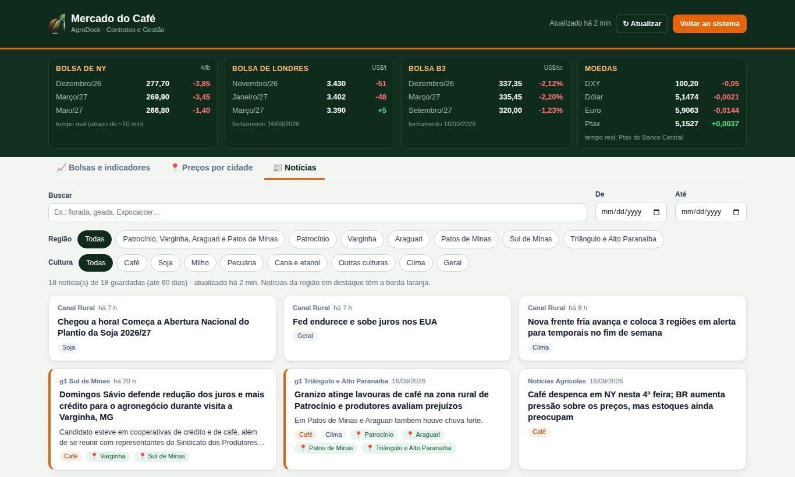
Notícias do café e do agro, com filtros por região e cultura.
Notícias do Notícias Agrícolas, Canal Rural e g1 (Agronegócios, Sul de Minas e Triângulo/Alto Paranaíba), das últimas semanas.
Região: as quatro cidades juntas, cada uma separada, Sul de Minas ou Triângulo e Alto Paranaíba. Notícias da região em destaque têm a borda laranja.
Cultura: Café, Soja, Milho, Pecuária, Cana e etanol, Outras culturas, Clima.
Use Buscar (ex.: florada, geada, Expocaccer) e as datas De/Até.
Clique na notícia para ler a matéria completa no site de quem publicou.
Informação para consultaAs cotações vêm de fontes públicas e podem ter atraso. Antes de fechar negócio, confirme o preço com a cooperativa ou o comprador.
12. Minha assinatura
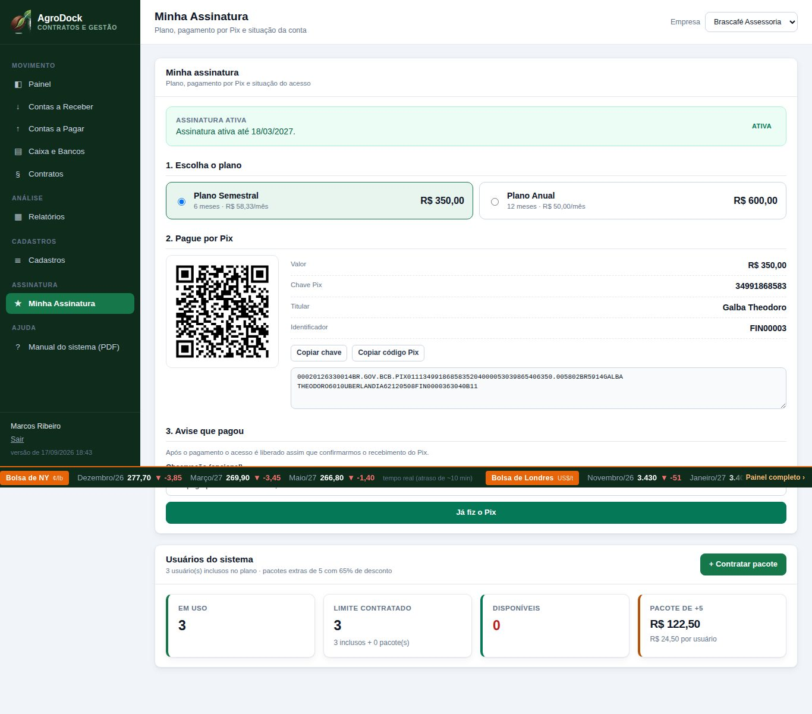
Minha Assinatura: situação, plano, Pix e usuários.
Em Minha Assinatura você vê a situação da conta, escolhe o plano e paga por Pix.
Como pagar
Escolha o plano (Semestral ou Anual).
Pague pelo QR Code ou copie o código Pix copia e cola no aplicativo do banco. O valor já vem preenchido.
Clique em Já fiz o Pix (se quiser, escreva uma observação, como o nome de quem pagou).
Assim que o recebimento é confirmado, o acesso fica liberado pelo prazo do plano.
Situações da conta
Situação
Acesso
Período de teste
Liberado por 48 h após o cadastro
Aguardando confirmação
Pix informado, aguardando conferência
Assinatura ativa
Liberado até a data de vencimento
Vencida / teste encerrado
Bloqueado até o pagamento
Acesso bloqueado
Bloqueado pelo suporte
Com o acesso bloqueado, o sistema abre direto na tela de pagamento. Os dados ficam guardados e voltam assim que o acesso é liberado.
Usuários da conta
O quadro Usuários do sistema mostra quantos estão em uso, o limite e as vagas. Precisando de mais usuários, fale com o suporte (WhatsApp ou e-mail exibidos na tela).
13. Usando no celular
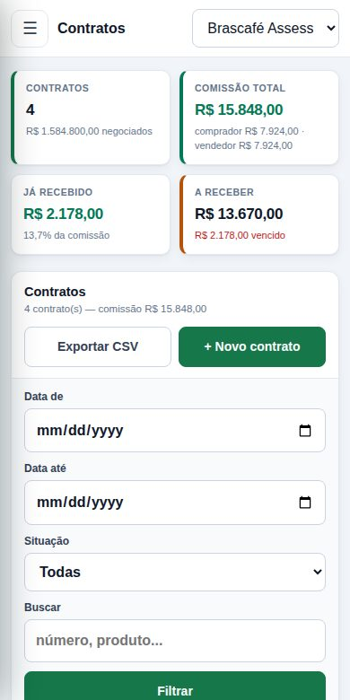
Contratos no celular.
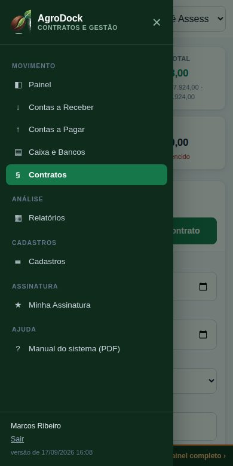
Menu aberto.
É o mesmo sistema, ajustado à tela:
O menu abre no botão ☰ e fecha ao escolher a tela.
Cada linha das listas vira um cartão, com o nome do campo ao lado do valor.
O contrato é lançado uma etapa por tela, com Voltar/Próximo.
Relatórios grandes (DRE, balancete) diminuem a fonte e continuam em tabela.
Atalho na tela inicialNo Chrome (Android) ou Safari (iPhone), abra o site e use Adicionar à tela inicial para abrir o AgroDock como um aplicativo.
14. Administração do site
Somente para o administrador do siteEste capítulo é para o dono do sistema. O menu Administração aparece apenas para a conta de administrador do site; os assinantes não veem essas telas.
14.1 Empresas e acessos
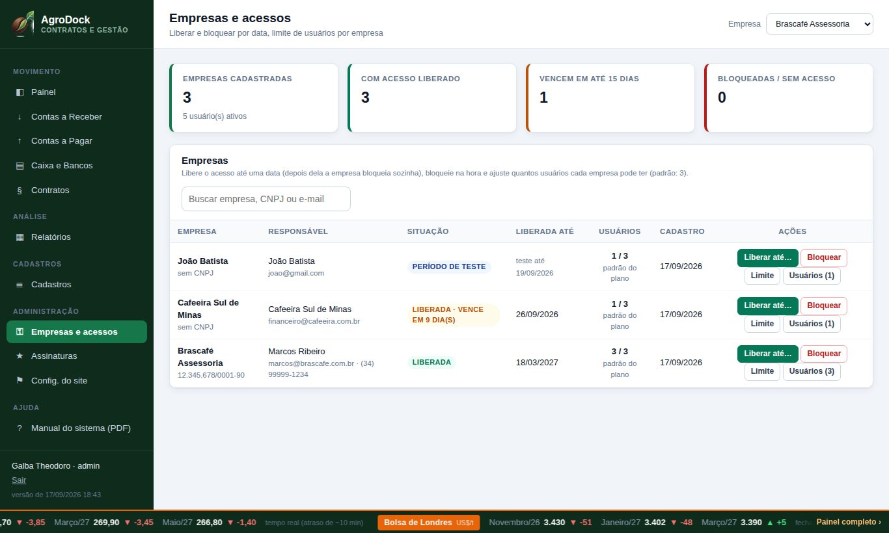
Lista de empresas cadastradas, com situação, prazo e usuários em uso.
Mostra todas as empresas assinantes com CNPJ, responsável, situação, até quando estão liberadas e usuários em uso / limite. Os quadros do topo contam as empresas liberadas, as que vencem em até 15 dias e as bloqueadas. Use a busca para achar por nome, CNPJ ou e-mail.
Botão
O que faz
Liberar até…
Escolha a data final (atalhos +30 dias, +6 meses, +1 ano) e uma observação (ex.: “Pix semestral de 16/09”). O acesso fica liberado até essa data e bloqueia sozinho no dia seguinte.
Bloquear
Corta o acesso da empresa na hora. Os dados ficam guardados; para voltar, use Liberar até…
Limite
Quantos usuários a empresa pode ter. O padrão é 3; aumente depois de receber o pagamento. Em branco volta ao padrão.
Usuários
Lista as pessoas da empresa. Para cada uma: marque/desmarque Liberado e defina Acesso até uma data (em branco = sem prazo). Clique em Salvar na linha.
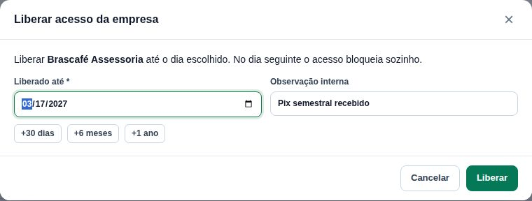
Liberar acesso até uma data.Aumentar o limite de usuários.
Acesso por usuário: liberado e prazo.
Bloqueio que o cliente não desfazUm usuário bloqueado aqui não pode ser reativado pelo administrador da empresa assinante — só por você.
14.2 Assinaturas
Assinaturas: quem está em teste, aguardando confirmação e ativo.
Quando o cliente clica em “Já fiz o Pix”, ele aparece como Aguardando Pix. Confira no seu banco e clique em Confirmar Pix: informe os meses a liberar (6 ou 12) e uma observação. O acesso é liberado até a nova data (renovações somam a partir do vencimento atual).
Liberar pacotes aparece quando o cliente pediu pacotes de usuários extras pelo sistema.
Gerenciar muda situação, plano, reabre um período de teste (horas) e guarda observações internas.
14.3 Config. do site
Configurações do site.
Grupo
O que configurar
Identidade do site
Nome do produto, slogan e nome da sua empresa (rodapé do site).
Contato exibido no site
WhatsApp e e-mail de suporte.
Recebimento por Pix
Chave Pix, titular, banco e cidade — usados no QR Code e no copia e cola dos clientes — e o aviso da tela de pagamento. Sem chave Pix, o cliente vê um aviso para falar com o suporte.
Planos e teste
Valor e duração dos planos semestral e anual e horas de teste grátis.
Faixa de cotações e painel Mercado do Café
Cotações ativas (1 mostra a faixa e o painel, 0 esconde os dois); de quantos em quantos minutos buscar cotações (10), histórico e preços por cidade (30) e notícias (20); e Mercado AgnoCafé (1/0) para mostrar ou não as cotações por cidade da AgnoCafé.
Consulta de CNPJ e CEP
Provedor das buscas (AUTO já funciona sem credenciais) e credenciais das APIs oficiais, se contratadas.
Grupo da faixa de cotações e do painel Mercado do Café.
Clique em Salvar configurações no topo.
15. Dúvidas frequentes
Situação
O que fazer
Não aparece o comprador/vendedor no contrato
Cadastre a pessoa em Cadastros → Clientes/Fornecedores com tipo Cliente ou Ambos, e confira se está na empresa escolhida no topo.
Não consigo editar um contrato
Contrato com contas a receber geradas fica travado. Na ficha, use Estornar recebíveis (só se nada foi recebido), edite e gere de novo.
“Seu plano permite 3 usuário(s)…”
O limite de usuários foi atingido. Desative um usuário que não usa mais ou peça ampliação do limite ao suporte.
O saldo do banco não bate
Confira a data e o valor do saldo inicial em Cadastros → Bancos e procure baixas lançadas em conta errada no extrato de Caixa e Bancos.
Lancei uma baixa errada
Em Contas a Receber/Pagar, clique em Ver no título e em Estornar na baixa. Depois lance de novo.
A busca de CNPJ ou CEP não trouxe dados
Confira os números digitados. Se o serviço estiver fora do ar, preencha à mão — o cadastro funciona normalmente.
Caí na tela de pagamento
O teste terminou, a assinatura venceu ou o acesso foi bloqueado. Pague pelo Pix e clique em “Já fiz o Pix”, ou fale com o suporte.
Uma mudança no sistema não apareceu
Veja a data “versão de …” no rodapé do menu. Se estiver antiga, atualize a página com Ctrl + F5.
Na compra, não acho onde escolher o comprador
É proposital: na compra quem compra é a sua empresa, então só o fornecedor é escolhido. Na venda, só o cliente.
O contrato de compra não gerou conta a receber
Compra gera conta a pagar (o dinheiro sai). Quem gera conta a receber é a venda e a corretagem.
O ICMS do contrato ficou zerado
Confira a UF no cadastro do comprador e do vendedor e se existe alíquota ativa para esse par de estados em Cadastros → ICMS. Depois edite e salve o contrato.
Mudei a tabela de ICMS e o contrato não mudou
É proposital: o contrato guarda a alíquota do dia em que foi salvo. Edite e salve o contrato para aplicar a tabela nova.
A SEFAZ não trouxe nenhuma nota
Confira se o ambiente está em Produção (em Homologação não vêm notas reais), se o CNPJ da empresa está certo e se o certificado não venceu. A SEFAZ guarda cerca de 90 dias — mais antigo que isso não vem.
“Esta nota está no sistema apenas como resumo”
A SEFAZ só entrega o XML completo depois da ciência da operação. Manifeste a ciência, clique em Buscar na SEFAZ de novo e a nota inteira chega.
Meu certificado é A3 (token/cartão)
Não funciona em sistema na nuvem. Peça o A1 em arquivo (.pfx) ao contador ou à certificadora.
Recebi uma nota que não é minha
Abra a nota, clique em Manifestar e escolha Desconhecimento da operação. É a forma legal de recusar; fale também com o seu contador.
A importação não gerou a conta a pagar
Marque a opção “Gerar a conta a pagar com as parcelas da nota” na janela de importação. Se a nota já tem título, exclua o título antes de importar de novo.
A faixa de cotações sumiu
Veja em Config. do site se Cotações ativas está 1. Se as fontes estiverem fora do ar, a faixa mostra o último valor ou some até voltarem.
O contrato impresso saiu sem logotipo
Envie o logotipo em Cadastros → Empresas e imprima de novo.
Como fazer uma cópia dos dados?
Use Exportar CSV nas listas e relatórios. O suporte também pode gerar uma cópia completa do banco de dados.
Precisa de ajuda?Fale com o suporte pelo WhatsApp ou e-mail exibidos na página inicial do site e na tela Minha Assinatura.